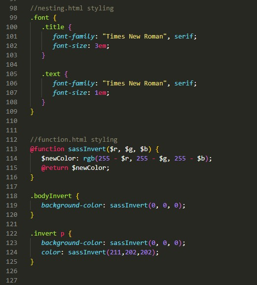

After configuring a lot of styling, your SASS file might get cluttered.
There is a way to split your code into multiple files and import them into one file.
For instance, to put the styling for function.html in another SASS
file, first create a directory called _sass.
Within the directory, create another SASS file. In this case, the file is called
functionStyle.scss
Write your SASS code in that file. Once you are finished, switch back to style.scss
and import the file with @import "file-name"
For instance, to import the functionStyle.scss file into style.scss
, the import statement would be @import "functionStyle".